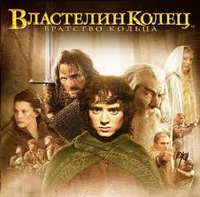

«Властелин колец» — знаменитый роман английского писателя Джона Рональда Руэла Толкина. Это история о Средиземье, где хоббит Фродо Бэггинс должен уничтожить Кольцо Всевластия, чтобы спасти мир от темного властелина Саурона.
Фэнтези, приключения.